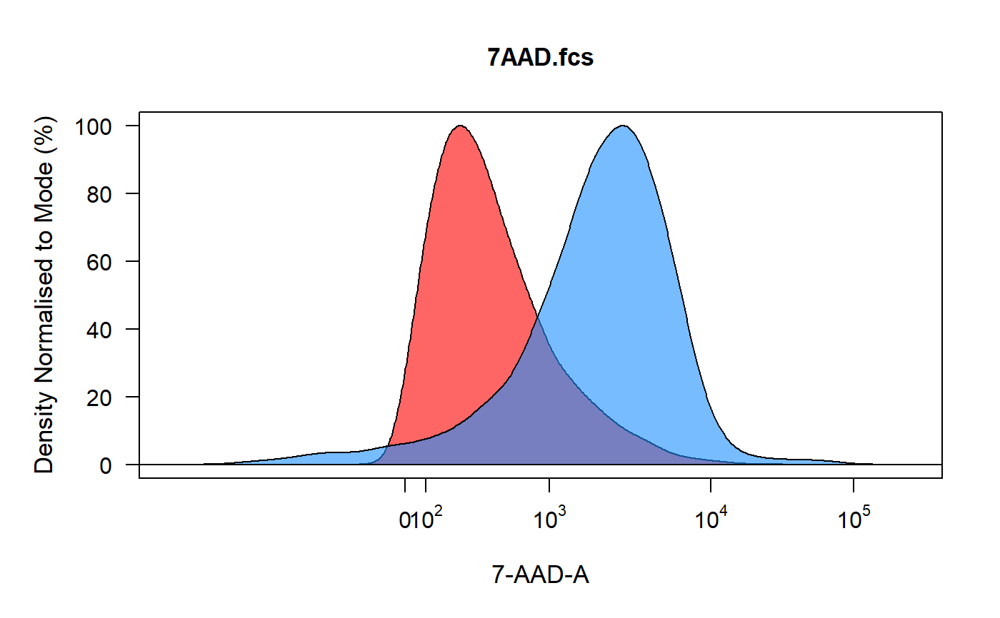
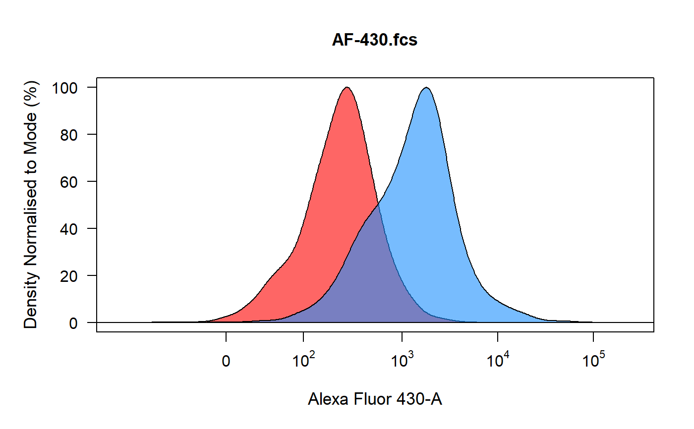
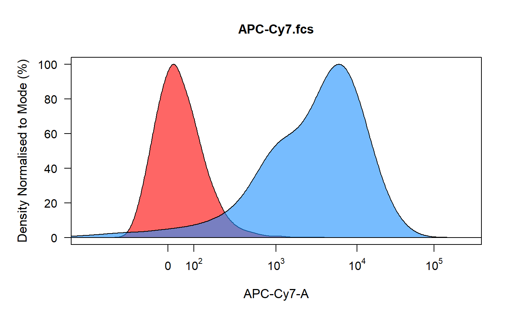
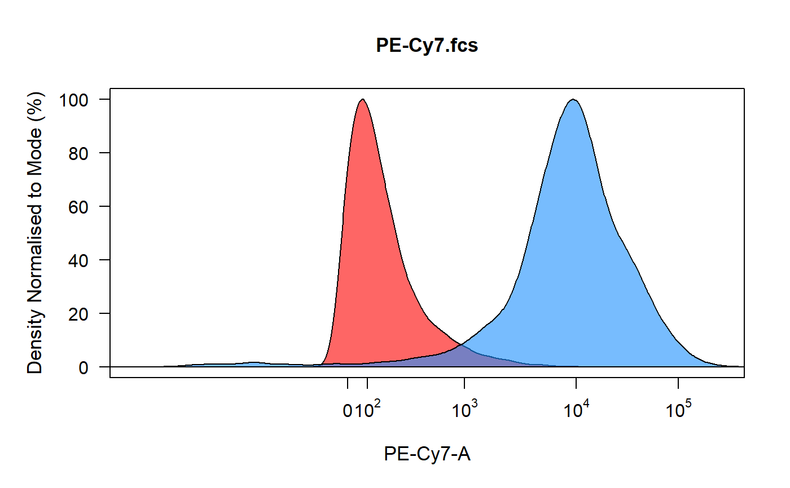
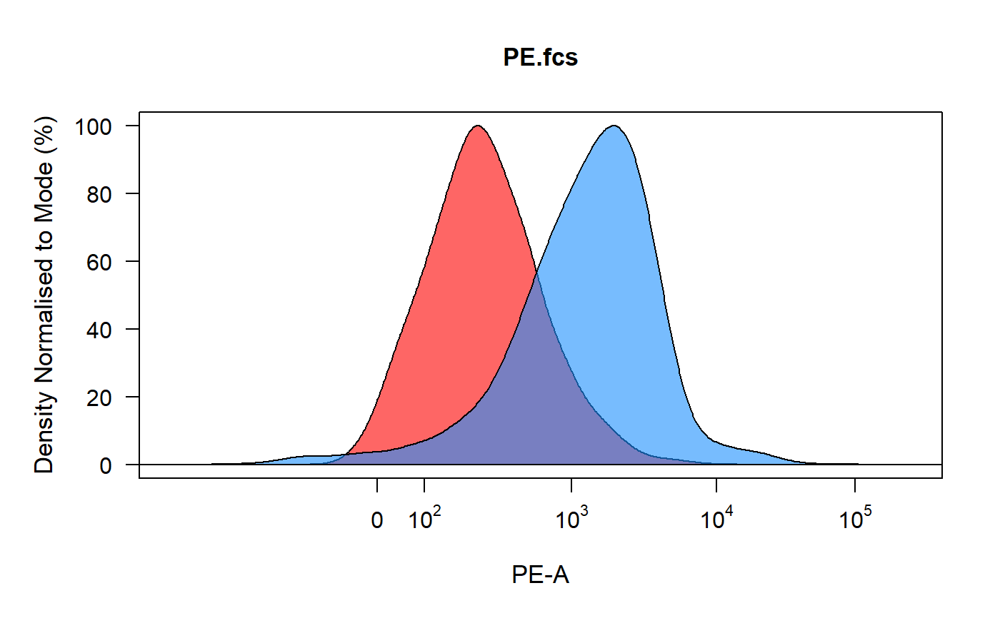

R/spillover_compute-methods.R
spillover_compute-flowSet-method.Rdspillover_compute uses the method described by Bagwell & Adams 1993 to
calculate the fluorescent spillover matrix using a reference universal
unstained control and single stain compensation controls.
# S4 method for flowSet spillover_compute(x, axes_trans = NULL, channel_match = NULL, spillover = "Spillover-Matrix.csv", ...)
| x | object of class |
|---|---|
| axes_trans | object of class
|
| channel_match | name of .csv file containing the names of the samples in
a column called "name" and their matching channel in a column called
"channel". |
| spillover | name of the output spillover csv file, set to
|
| ... | additional arguments passed to
|
spillover matrix object and "Spillover Matrix.csv" file.
Calculate spillover matrix using
flowSet containing gated single stain
compensation controls and an unstained control. spillover_compute
begins by the user selecting which fluorescent channel is associated with
each control from a dropdown menu. Following channel selection,
spillover_compute runs through each control and plots the density
distribution of the unstained control in red and the compensation control in
blue. Users can then gate the positive signal for spillover calculation using
an interval gate. The percentage spillover is calculated based on the median
fluorescent intensities of the stained populations and the universal
unstained sample. The computed spillover matrix is returned as an R object
and written to a named .csv file for future use.
C. B. Bagwell \& E. G. Adams (1993). Fluorescence spectral overlap compensation for any number of flow cytometry parameters. in: Annals of the New York Academy of Sciences, 677:167-184.
library(CytoRSuiteData) # Bypass directory check for external files options("CytoRSuite_wd_check" = FALSE) # Don't run - skips the gating process options("CytoRSuite_interact" = FALSE) # Load in compensation controls fs <- Compensation gs <- GatingSet(Compensation)#>#>#>#>#>#>#># Gate using gate_draw gt <- Compensation_gatingTemplate gating(gt, gs)#>#>#>#>#>#>#># Channel match fille cmfile <- system.file("extdata", "Compensation-Channels.csv", package = "CytoRSuiteData" ) # Compute fluorescent spillover matrix spill <- spillover_compute(getData(gs, "Single Cells"), channel_match = cmfile, spillover = "Example-spillover.csv" )